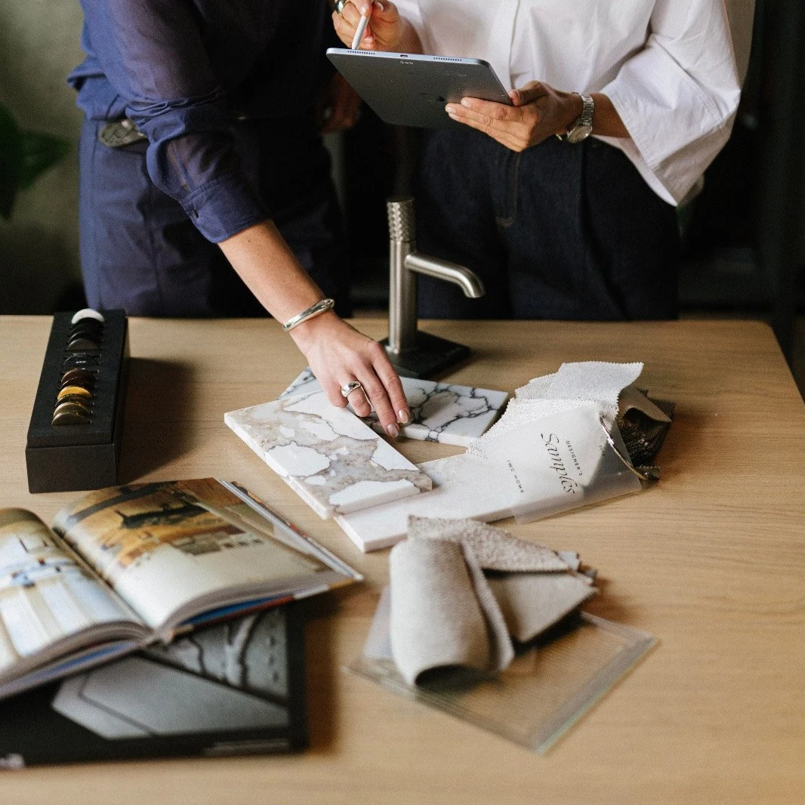

01Pierwszy krok
Bezpłatne spotkanie / konsultacja wstępna
Niezobowiązujące spotkanie przy kawie albo krótka rozmowa online. Poznajemy Ciebie, inwestycję, potrzeby i problemy, a także pokazujemy, jak pracujemy.
Wspólnie wybieramy najlepszy zakres współpracy. To spotkanie działa w obie strony — sprawdzamy, czy dobrze nam się rozmawia i czy będziemy dobrze współpracować.
- Poznanie inwestycji i potrzeb
- Omówienie problemów i etapu prac
- Prezentacja sposobu pracy Artefekt
- Dobór najlepszego zakresu współpracy
Etap · przed rozpoczęciem współpracyUmów spotkanie